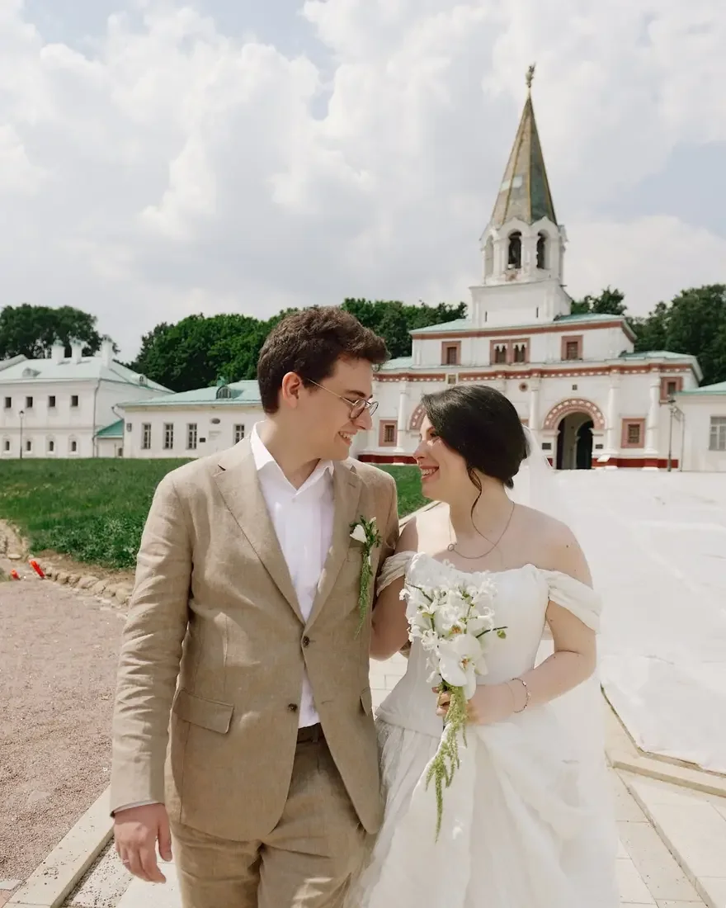

Бутоньерка — маленькая деталь, которую видно почти на каждом фото жениха. Она связывает его образ с букетом невесты и декором свадьбы. Рассказываем, как её выбрать, сочетать и сохранить свежей до конца вечера.
Что такое бутоньерка
Бутоньерка — небольшая цветочная композиция, которую крепят на лацкан пиджака жениха. Обычно это один-три цветка с зеленью, собранные в той же гамме, что и букет невесты. Традиционно её крепят на левый лацкан — со стороны сердца.
Как сочетать с букетом невесты
Самый надёжный приём — повторить в бутоньерке один цветок из букета невесты и ту же зелень. Если в букете белые каллы, у жениха может быть белый цветок с веточкой зелени — пара выглядит единым целым, но бутоньерка не копирует букет и не перегружает костюм.
Яркий акцент свадьбы тоже можно повторить в бутоньерке: например, бордовый цветок при бордовой палитре декора. Подробнее о палитре — в статье про цвет свадьбы.

Под костюм
Чем насыщеннее цвет костюма, тем спокойнее может быть бутоньерка: на тёмно-синем или чёрном хорошо читаются белые и кремовые цветы, на светлом бежевом — белый с зеленью или неяркий акцент. Размер — не шире лацкана: крупная бутоньерка тянет пиджак и выглядит тяжело.
Как сохранить свежей
Бутоньерку весь день носят без воды, поэтому для неё выбирают стойкие цветы и плотную зелень, а стебли тщательно обрабатывают и закрывают лентой. Её прикалывают незадолго до фотосессии, а в жару стоит держать запасную. Крепят двумя булавками или магнитом — чтобы не поворачивалась и не падала.
Совет: закажите бутоньерки свидетелю и отцам пары — в той же гамме, но скромнее, чем у жениха.
Как заказать
Если декор свадьбы делает наша студия, бутоньерки удобно собрать в той же палитре, что и флористику зала и букет. Расскажите о дате и образе пары — подскажем. О букете — в статье про букет невесты.
Частые вопросы
На какую сторону крепится бутоньерка?
Традиционно — на левый лацкан пиджака, со стороны сердца.
Из каких цветов делают бутоньерку?
Чаще всего — из одного-трёх цветов, которые есть в букете невесты, с небольшой веточкой зелени.
Нужны ли бутоньерки свидетелю и отцам?
По желанию. Если делаете — в той же гамме, но скромнее, чем у жениха.